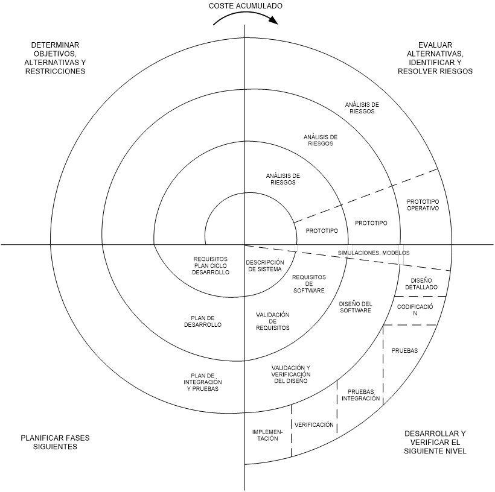

Cascada, espiral, incremental, prototipos, evolutivo y RUP. El modelo que elegís define el destino del proyecto.
¿Qué es el ciclo de vida?
Abarca desde que surge la necesidad inicial hasta que el sistema sale de uso. El modelo define orden y forma de las tareas: especificación, prototipado, diseño, prueba, implementación.
La elección afecta productividad, calidad, riesgo y relación con el cliente.
1 · Cascada (ciclo de vida clásico)
El modelo más viejo, pero todavía se usa. Etapas secuenciales: cada una debe estar 100% terminada antes de empezar la siguiente. En la variante modificada se permite retornar a etapas previas ante errores (flechas rojas punteadas).
Etapas secuenciales del ciclo clásico — cada salida alimenta la siguiente etapa.
✅ Ventajas
Simple de administrar
Todo el equipo en la misma etapa
Permite cronogramar bien
❌ Desventajas
Rígido
Cliente no ve avances hasta pruebas
Cambios difíciles de incorporar
Ideal cuando los requisitos están completamente definidos y no se esperan cambios.
2 · Espiral (Barry Boehm, años 80)
Gran aporte: incorpora análisis de riesgos al ciclo de vida. El proyecto es una suma de mini-proyectos. Cada vuelta cubre los 4 cuadrantes y el radio representa el coste acumulado.
Espiral de Arquímedes (Boehm, 1988): el radio = coste acumulado; cada vuelta atraviesa los 4 cuadrantes y produce un incremento del producto.

Diagrama original del apunte (p. 14).
3 · Incremental (entrega por etapas)
Le suma flexibilidad a cascada. Soluciona su mayor problema: el cliente no veía nada hasta el final.
Especificar requerimientos una vez al comienzo.
Descomponer el sistema en partes operativas (sub-sistemas) priorizadas.
Diseñar, codificar, probar e integrar cada incremento y entregarlo al cliente mientras se sigue con el resto.
✅ Ventajas
El cliente ve avances tempranos y opera sub-sistemas reales.
Las partes más importantes se entregan primero → si se cancela, lo crítico ya está.
Permite paralelizar equipos sobre distintos incrementos.
Reduce el riesgo de integración final: se integra de a poco.
El feedback temprano evita desvíos grandes.
❌ Desventajas
Requiere que el sistema sea descomponible en partes operativas independientes.
La especificación inicial debe ser suficientemente estable — si cambia mucho, se rompe el modelo.
La arquitectura debe pensarse desde el principio para soportar todos los incrementos (riesgo de mala arquitectura).
Gestión más compleja: múltiples entregas solapadas en el tiempo.
Costos de integración y regresión repetidos por cada incremento.
Los requerimientos se especifican una sola vez; los incrementos se solapan y cada uno entrega un sub-sistema operativo.
Variante: Diseño por planificación. Las entregas se ordenan por prioridad del cliente. Si se cancela, lo importante ya está hecho.
4 · Prototipos
Un prototipo simula el funcionamiento del sistema. Útil cuando el cliente no sabe qué quiere o el desarrollador no conoce el negocio.
✏️ Ligeros
Bocetos de pantallas con dibujos de navegación.
⚙️ Operativos
Módulos funcionales que cubren partes de los requerimientos.
Evolución: el prototipo era descartable (borrador) → el cliente no entendía por qué se tiraba → pasaron a ser evolutivos (se refinan, no se descartan).
5 · Evolutivo
Ciclos que enlazan especificación, desarrollo y validación. Cada ciclo genera un sistema completo que el cliente puede operar — se refina con feedback en el siguiente ciclo.
Los ciclos se encadenan; cada uno entrega un sistema completo y operable que evoluciona con el feedback.
Útil cuando hay desconocimiento, urgencia extrema o entorno cambiante.
6 · RUP — Rational Unified Process
Asociado a UML. Propuesto por Jacobson, Booch y Rumbaugh. Modelo iterativo e incremental: las columnas son las 4 fases, las filas son las disciplinas, y las jorobas indican la intensidad de cada disciplina en cada iteración.
Cada fase contiene múltiples iteraciones; la intensidad de cada disciplina cambia según la fase.
Fase
Entregable clave
Inicio
Procesos de negocio, actores e interacciones
Elaboración
Modelo de requerimientos (casos de uso) + arquitectura
Construcción
Sistema operativo documentado
Transición
Sistema funcionando en producción
Cada fase tiene iteraciones. Cada iteración pasa por los flujos de trabajo: requisitos, análisis, diseño, implementación y pruebas.
Comparador rápido
Cascada
🟢 Alta — requisitos cerrados
Espiral
🟡 Media
Incremental
🟡 Media
Evolutivo
🔴 Baja — requisitos cambian
RUP
🟡 Media-alta
Cascada
🔴 No lo aborda
Espiral
🟢 Foco central
Incremental
🟡 Medio
RUP
🟢 En elaboración
Cascada
🔴 Solo al final
Espiral
🟢 Cada vuelta
Incremental
🟢 Cada entrega
Evolutivo
🟢 Continua
RUP
🟢 Cada iteración
Criterios para elegir modelo
¿Se puede descomponer en subsistemas?
¿Qué tan estables son los requisitos?
¿Qué tan urgentes son plazos y presupuesto?
¿Cuánto riesgo tiene el proyecto?
¿Con qué frecuencia ve avances el cliente?
Flashcards
Modelo Cascada — características y uso
Modelo secuencial y rígido: cada etapa debe terminar al 100% antes de iniciar la siguiente (Análisis → Diseño → Codificación → Pruebas → Integración → Operación y mantenimiento).
Ventajas: fácil de administrar, cronogramable, todo el equipo en la misma etapa.
Desventajas: rígido, el cliente no ve avances hasta las pruebas, difícil absorber cambios.
Cuándo: requisitos completamente definidos y estables.
Espiral (Boehm, 1988) — aporte clave
Gran aporte: introduce el análisis de riesgos como actividad propia del ciclo de vida.
El proyecto es una suma de mini-proyectos. Cada vuelta cubre 4 cuadrantes:
Determinar objetivos, alternativas y restricciones.
Evaluar alternativas e identificar/resolver riesgos.
Desarrollar y verificar el producto.
Planificar las fases siguientes.
El radio de la espiral representa el coste acumulado.
Incremental (entrega por etapas)
Extiende cascada: se especifica una vez, se descompone en sub-sistemas operativos priorizados, y cada uno se diseña/codifica/prueba/entrega al cliente mientras otros siguen en desarrollo (solapados).
Ventajas: entregas tempranas, feedback rápido, priorización, menor riesgo de integración.
Desventajas: exige sistema descomponible, requisitos estables y una buena arquitectura global desde el inicio.
Prototipos: descartables vs evolutivos
Un prototipo simula el funcionamiento del sistema para clarificar requisitos cuando el cliente no sabe qué quiere.
Ligeros: bocetos / mockups de pantallas. Operativos: módulos funcionales.
Evolución histórica: antes eran descartables (borradores que se tiraban) → el cliente no entendía por qué se descartaba trabajo → pasaron a ser evolutivos (se refinan y se conservan en el producto final).
Modelo Evolutivo
Ciclos que enlazan especificación, desarrollo y validación. Cada ciclo genera un sistema completo que el cliente usa; el feedback alimenta el ciclo siguiente.
Útil cuando: hay desconocimiento del negocio, urgencia extrema o entorno muy cambiante.
Diferencia con incremental: en evolutivo los requisitos mismos evolucionan; en incremental son estables y solo cambia lo que se entrega.
RUP — Rational Unified Process
Proceso iterativo e incremental asociado a UML (Jacobson, Booch, Rumbaugh).
4 fases:
Inicio: procesos de negocio y actores.
Elaboración: arquitectura y casos de uso.
Construcción: diseño, código y pruebas.
Transición: puesta en entorno real.
Cada fase contiene iteraciones que atraviesan los flujos de trabajo (requisitos, análisis, diseño, implementación, pruebas).
🎯 Autoevaluación
1. ¿Qué modelo incorpora explícitamente el análisis de riesgos?
Cascada
Espiral
Incremental
Prototipos
Boehm introdujo el análisis de riesgos como cuadrante propio del espiral.
2. RUP se define como...
Secuencial puro
Ágil
Iterativo e incremental
Descartable
RUP es un híbrido iterativo + incremental asociado a UML.
3. ¿Cuál es la fase de RUP donde el sistema pasa al entorno real?
Inicio
Elaboración
Construcción
Transición
Transición termina cuando el sistema funciona correctamente en producción.
Preguntas tipo parcial
P5 · Grafique a modo de ciclo de vida de entrega por etapas (incremental). Incluya ventajas y desventajas.(2 puntos)
Respuesta modelo
El modelo incremental (también llamado entrega por etapas) parte de una única especificación de requerimientos, descompone el sistema en sub-sistemas priorizados, y para cada uno ejecuta las etapas de diseño → codificación → pruebas → integración → entrega. Las etapas de distintos incrementos se solapan en el tiempo.
Gráfico: ver el diagrama de la sección 3 — columna común de Análisis y Especificación a la izquierda, y filas desplazadas (una por sub-sistema) con las etapas de desarrollo que desembocan en la entrega parcial.
Ventajas
Entregas tempranas: el cliente opera partes reales antes de terminar el sistema.
Permite priorizar: lo más crítico se entrega primero.